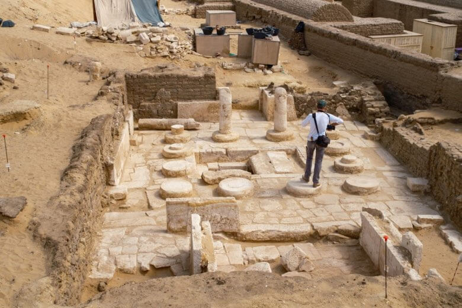
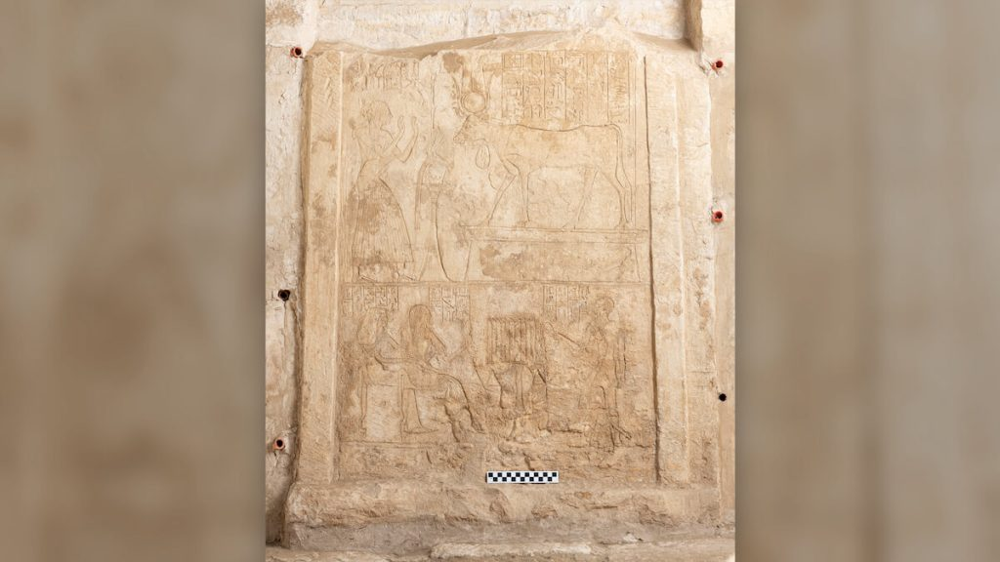

ဒီ ရှာဖွေ တွေ့ရှိတဲ့ ဂူသင်္ချိုင်း တွေအနက်က အကြီးဆုံး ဂူသင်္ချိုင်းဟာ ပါနက်ဆီ (Panehsy) အမည်ရ အီဂျစ် အရာရှိကြီး တစ်ဦးရဲ့ အုတ်ဂူ ဖြစ်ပါတယ်။ သူဟာ အာမွန် နတ်ဘုရားကျောင်း (Temple of Amun) ကို ကြီးကြပ်ရတဲ့ ဘုန်းတော်ကြီး ဖြစ်တယ်လို့ ဒီ တူးဖေါ်ရေး အဖွဲ့မှာ ပါဝင်တဲ့ ရှေးဟောင်း သုတေသီ တစ်ဦးဖြစ်သူ လာရာ ဝက်စ် (Lara Weiss) က ရှင်းပြပါတယ်။
လာရာ ဟာ နယ်သာလန် ရှေးဟောင်း အမျိုးသား ပြတိုက်က အီဂျစ်နဲ့ နူဘီယန် ရှေးဟောင်း ပစ္စည်းတွေကို စစ်ဆေးသတ်မှတ်ရသူ curator တစ်ဦး ဖြစ်ပါတယ်။ သူမဟာ အခု တူးဖေါ်ရေး အဖွဲ့မှာ အရေးပါတဲ့ သုတေသီ တစ်ဦးလဲ ဖြစ်ပါတယ်။
ယခု တူးဖေါ် တွေ့ရှိမှုအရ ပါနက်ဆီ ရဲ့ သင်္ချိုင်းဂူဟာ အလွန် လှပတယ် ဆိုတာကို တွေ့ကြရ ပါတယ်။ သူ့ သင်္ချိုင်းဂူ နံရံကို ရုပ်ကြွတွေနဲ့ ထွင်းထု တန်ဆာဆင် ထားပါတယ်။ ဒီ ရုပ်ကြွတွေကို ထုလုပ်စဉ်က ဆေးရောင်စုံ လှလှလေးတွေ ခြယ်သခဲ့ဟန် လက္ခဏာ ကိုလဲ တွေ့ကြ ရပါတယ်။
သူ့သင်္ချိုင်းဂူမှာ ရေးထိုးထားတဲ့ မှတ်တမ်းတွေ အရ သူ့မှာ သားထောက် သမီးခံ ကျန်ရစ်ခဲ့ခြင်း မရှိပါဘူး။ ဒါ့ကြောင့် သူကွယ်လွန်တဲ့ အခါမှာ သူ့တပည့် တစ်ယောက်က သူ့သင်္ချိုင်းအတွက် နတ်ဖုရားတွေ ပူဇော်ဖို့ လှူဖွယ်တွေကို ယူဆောင် လာပေးခဲ့တယ်လို့ သိရပါတယ်။
သူ့ ဂူသင်္ချိုင်းထဲမှာ လူသားရုပ်ကြွင်းတွေလဲ ရှာဖွေ တွေ့ရှိ ခဲ့ပါတယ်။ ဒါပေမယ့် ဒီရုပ်ကြွင်း တွေဟာ နှောင်းခေတ်ကျမှ လာပြီး မြှုပ်နှံထားတဲ့ ပုံ ပေါ်နေပါတယ်။

ယုယု ရဲ့ သင်္ချိုင်းကတော့ ပါနက်ဆီ ရဲ့ သင်္ချိုင်းထက် ပိုသေးပါတယ်။ ဒါပေမယ့် သူ့သင်္ချိုင်း နံရံမှာ ထွင်းထုထားတဲ့ နံရံဆေးရေး ရုပ်ကြွ တွေကတော့ အတော်လေး လက်ရာ ပြောင်မြောက် လှပါတယ်။ ဒီ ဆေးရေးတွေ မှာ သူ့ရဲ့ မျိုးဆက် ၄ ဆက်ရဲ့ ပုံတွေကို ထည့်သွင်း ရေးချယ် ထားတာ ဖြစ်ပါတယ်။
“သူ့ မိဘတွေ၊ သူနဲ့ သူ့ဇနီး၊ သူ့ ညီနဲ့ ညီရဲ့ မိသားစု ပုံတွေ၊ သူ့ကလေး တွေရဲ့ ပုံတွေနဲ့ သူ့မြေးတွေရဲ့ ပုံတွေကို ထည့်သွင်း ရေးဆွဲထားတာ ဖြစ်ပါတယ်” လို့ Weiss ကရှင်းပြပါတယ်။
နောက်ထပ် အမည်မသိ သူတစ်ဦးရဲ့ သင်္ချိုင်းဂူ နံရံမှာတော့ သူ့မိသား စုဝင်တွေလို့ ယူဆရတဲ့ သူလေးဦးရဲ့ ရုပ်ကြွတွေ ထွင်းထု ထားပါတယ်။ ဒီ ရုပ်ထုတွေက ပြီးဆုံးအောင် ထွင်းထုနိုင် ခဲ့ဟန်တော့ မတူပါဘူး။ ဒါပေမယ့် ဒီ ရုပ်တုတွေရဲ့ ဒီဇိုင်း ပုံစံက အနီးက သင်္ချိုင်းဂူ တစ်ခုထဲက ရုပ်တုတွေနဲ့ အတော်လေး ဆင်တူတာကိုတော့ သုတေသီတွေ သတိ ပြုမိ ခဲ့ကြပါတယ်။

သူက ဒီ နံရံဆေးရေး ရုပ်ကြွတွေရဲ့ အရည်အသွေးဟာ အထူးပဲ အံ့အားသင့်ဖွယ် အဆင့်မြင့် လှတယ်လို့ ဆိုပါတယ်။ ဒီ ရုပ်ကြွတွေ ထွင်းထုခဲ့တဲ့ အနုပညာရှင်တွေဟာ အီဂျစ်ခေတ်က အခြား အနုပညာရှင်တွေ ပြုလုပ်ခဲ့ခြင်း မရှိတဲ့ ၃ ဖက်မြင် သဘောတရား တွေကို ထည့်သွင်း ထုလုပ်ခဲ့တယ်လို့ သူက ရှင်းပြပါတယ်။
ဆက်ကရာ ဒေသမှာ ရှေးဟောင်း သုတေသန တူးဖော်မှု တွေကို အရှိန်အဟုန်နဲ့ ဆက်လက် ဆောင်ရွက်နေပါတယ်။ ဒီဒေသဟာ အီဂျစ် ရှေးဟောင်း သုတေသန ပညာရှင် တွေအတွက် အဖိုး မဖြတ်နိုင်တဲ့ သမိုင်း အထောက်အထား အများအပြားကို ဖော်ထုတ် ပေးနိုင်လိမ့်မယ်လို့ ယုံကြည်နေ ကြပါတယ်။
Ref: 3,300-year-old ancient Egyptian tombs and chapel with ‘amazing’ decorations unearthed at Saqqara | Live Science